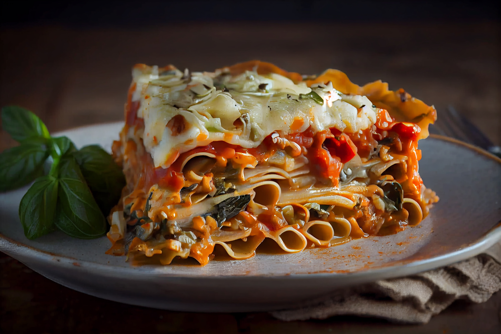

Lasagna

Lasagna is a traditional Italian dish made by layering sheets of pasta with sauces and fillings. The classic version features alternating layers of pasta, rich Bolognese sauce made with meat, tomatoes, and spices, and creamy béchamel sauce. Each layer is topped with cheese—often mozzarella or Parmesan—and baked until the top is golden and bubbling. Originating from the Emilia-Romagna region, lasagna has become a beloved comfort food worldwide.
Beyond the classic recipe, lasagna has evolved into countless variations to suit different tastes and dietary needs. Vegetarian versions may include spinach, zucchini, or eggplant, while others swap beef for chicken, seafood, or plant-based proteins. There are also gluten-free and vegan adaptations. Its appeal lies in the balance of textures—the tender pasta, the creamy sauces, and the crispy, cheesy crust—making it a favorite for family gatherings and restaurant menus alike.
Ingredients
- Lasagna noodles – 9 sheets (cooked al dente)
- Bulk Italian sausage – 1 ¼ lb (about 570 g)
- Ground beef – ¾ lb (about 340 g)
- Medium onion – 1, diced
- Garlic cloves – 3, minced
- Crushed tomatoes – 1 can (28 oz / 800 g)
- Tomato paste – 2 cans (6 oz / 170 g each)
- Water – ⅔ cup (160 ml)
- Sugar – 3 Tbsp
- Fresh parsley – 3 Tbsp + ¼ cup (divided)
- Dried basil – 2 tsp
- Fennel seed – ¾ tsp
- Salt – ¾ tsp (plus more to taste)
- Ground black pepper – ¼ tsp
- Large egg – 1
- Ricotta cheese – 15 oz (425 g)
- Part-skim mozzarella cheese – 4 cups (shredded)
- Parmesan cheese – ¾ cup (grated)
Steps
- Preheat the oven to 375 °F (190 °C).
- Cook the lasagna noodles in salted boiling water until al dente, then drain and set aside.
- In a large skillet, brown the Italian sausage and ground beef over medium heat; drain excess fat.
- Add diced onion and minced garlic to the meat and sauté until softened.
- Stir in crushed tomatoes, tomato paste, water, sugar, parsley, basil, fennel seed, salt, and pepper; simmer for about 30 minutes, stirring occasionally.
- In a mixing bowl, combine ricotta cheese, egg, remaining parsley, and a pinch of salt.
- Spread a thin layer of meat sauce on the bottom of a 9×13‑inch baking dish.
- Layer noodles over the sauce, then spread ricotta mixture, sprinkle mozzarella, and top with more meat sauce.
- Repeat the layers until all ingredients are used, finishing with sauce and a generous layer of mozzarella and Parmesan on top.
- Cover with aluminum foil (tenting it slightly to avoid touching the cheese) and bake for 25 minutes.
- Remove the foil and bake an additional 25 minutes, or until the top is golden and bubbly.
- Let the lasagna rest for at least 15 minutes before slicing and serving.
Home